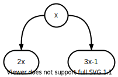
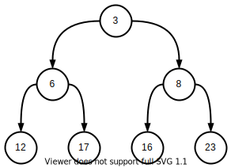
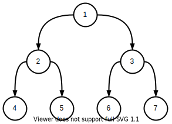

搜索
 Jan 13, 2021
Jan 13, 2021
运用计算机的高性能枚举问题的答案.
 Menu
Menu
简介 ¶
搜索算法：枚举问题的所有可能答案，并逐一校验.
设集合 $A$ 满足以下性质
x\in A\intro
\begin{cases}
2x\in A\\
3x-1\in A
\end{cases}
已知 $3\in A$，问 $23\in A$ 是否成立？
$A$ 的性质可抽象为下图：

以 $3$ 为树根，向下拓展树形图. 树中的所有节点都属于 $A$. 于是只需查找 $23$ 是否在树中.

对于复杂的问题，可以先抽象出关系图，再搜索求解.
广度优先搜索（BFS） ¶
广度优先搜索（Breadth First Search，BFS）按层次搜索节点. 其原理如下：
- 建立空队列.
- 将根节点入队.
- 取出队头，将其所有子节点入队.
- 重复上一步直到队列为空.
BFS 搜索该图的步骤：
- 节点 $1$ 入队
- 节点 $1$ 出队，$2,3$ 入队
- 节点 $2$ 出队，$4,5$ 入队
- 节点 $3$ 出队，$6,7$ 入队
- 节点 $4$ 出队
- 节点 $5$ 出队
- 节点 $6$ 出队
- 节点 $7$ 出队

同一个节点不能被重复访问，否则将导致死循环.
bool vis[]; // vis[u]：节点 u 是否访问过
void bfs(int s) {
queue<int> Q;
Q.push(s);
while(!Q.empty()) {
int u = Q.top();
Q.pop();
for ( /* 枚举 u 的子节点 v */ ) {
if (!vis[v]) {
Q.push(v);
vis[v] = true;
}
}
}
}
深度优先搜索（DFS） ¶
深度优先搜索（Depth First Search，DFS）尽可能往更深处搜索节点. 其本质是递归.
DFS 搜索该图的步骤：
- 访问根节点 $1$.
- 访问子节点 $2$.
- 访问子节点 $4$.
- 访问子节点 $5$.
- 访问子节点 $3$.
- 访问子节点 $6$.
- 访问子节点 $7$.
- 访问子节点 $2$.
同一个节点不能被重复访问，否则将导致死循环.
bool vis[]; // vis[u]：节点 u 是否访问过
void dfs(int s) {
vis[s] = true;
for ( /* 枚举 u 的子节点 v */ ) {
if (!vis[v]) {
dfs(v);
}
}
}
多维度搜索：前驱 ¶
搜索二维数组 $a[n,m]$ 时，$a[i,j]$ 抽象为节点 $(i,j)$. 其子节点为 $(i+1,j),(i-1,j),(i,j+1),(i,j-1)$，即与其相邻的四个节点.

现在从某个节点开始搜索，枚举子节点的工作就显得繁琐. 以 DFS 为例：
bool vis[][]; // vis[x][y]: a[x][y] 是否访问过
void dfs(int x, int y) {
vis[x][y] = true;
if (x + 1 <= n && !vis[x + 1][y]) {
dfs(x + 1, y);
}
if (x - 1 >= 1 && !vis[x - 1][y]) {
dfs(x - 1, y);
}
if (y + 1 <= n && !vis[x][y + 1]) {
dfs(x, y + 1);
}
if (y - 1 >= 1 && !vis[x][y - 1]) {
dfs(x, y - 1);
}
}
届时可以通过前驱节省工作量.
bool vis[][];
const int dx[] = {1, 0, -1, 0}; // 第一维度前驱
const int dy[] = {0, 1, 0, -1}; // 第二维度前驱
void dfs(int x, int y) {
vis[x][y] = true;
for (int i = 0; i < 4; i ++) {
int nx = x + dx[i], ny = y + dy[i];
if (nx >= 1 && nx <= n && ny >= 1 && ny <= m && !vis[nx][ny]) {
dfs(nx, ny);
}
}
}